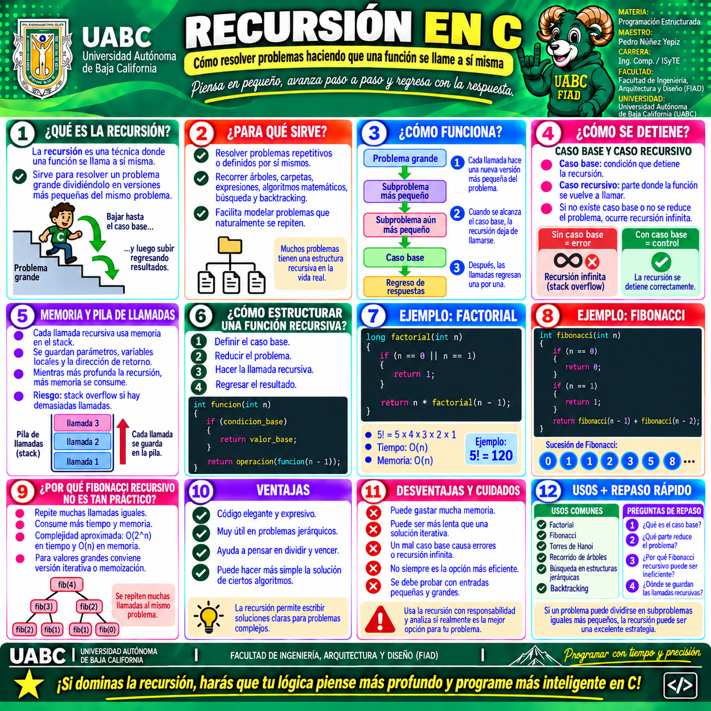

🔁 Galería visual del tema
Esta infografía complementa el Tema 9 · Recursión. Resume qué es la recursión, para qué sirve, cómo funciona, cómo se detiene mediante el caso base, cómo utiliza la pila de llamadas y cuáles son sus principales ventajas, riesgos y aplicaciones.
Selecciona la imagen para verla a mayor tamaño y utilizar las herramientas de zoom del visor.

1 · Recursión en C
Explica el caso base y el caso recursivo, la reducción progresiva del problema, el consumo de memoria en el stack, cómo estructurar una función recursiva y ejemplos clásicos como factorial y Fibonacci.
🧠 Puntos clave que debes identificar
1️⃣
CASO BASE
Es la condición que detiene la recursión.
Es la condición que detiene la recursión.
2️⃣
REDUCCIÓN
Cada llamada debe acercar el problema al caso base.
Cada llamada debe acercar el problema al caso base.
3️⃣
MEMORIA
Cada llamada ocupa espacio en la pila de llamadas.
Cada llamada ocupa espacio en la pila de llamadas.
4️⃣
EFICIENCIA
No siempre la solución recursiva es la más práctica.
No siempre la solución recursiva es la más práctica.
🎯
EN RESUMEN
Una función recursiva se llama a sí misma para resolver versiones más pequeñas de un problema. Debe contar con un caso base, reducir correctamente el problema y utilizarse con criterio para evitar llamadas innecesarias o un desbordamiento de la pila.
Una función recursiva se llama a sí misma para resolver versiones más pequeñas de un problema. Debe contar con un caso base, reducir correctamente el problema y utilizarse con criterio para evitar llamadas innecesarias o un desbordamiento de la pila.